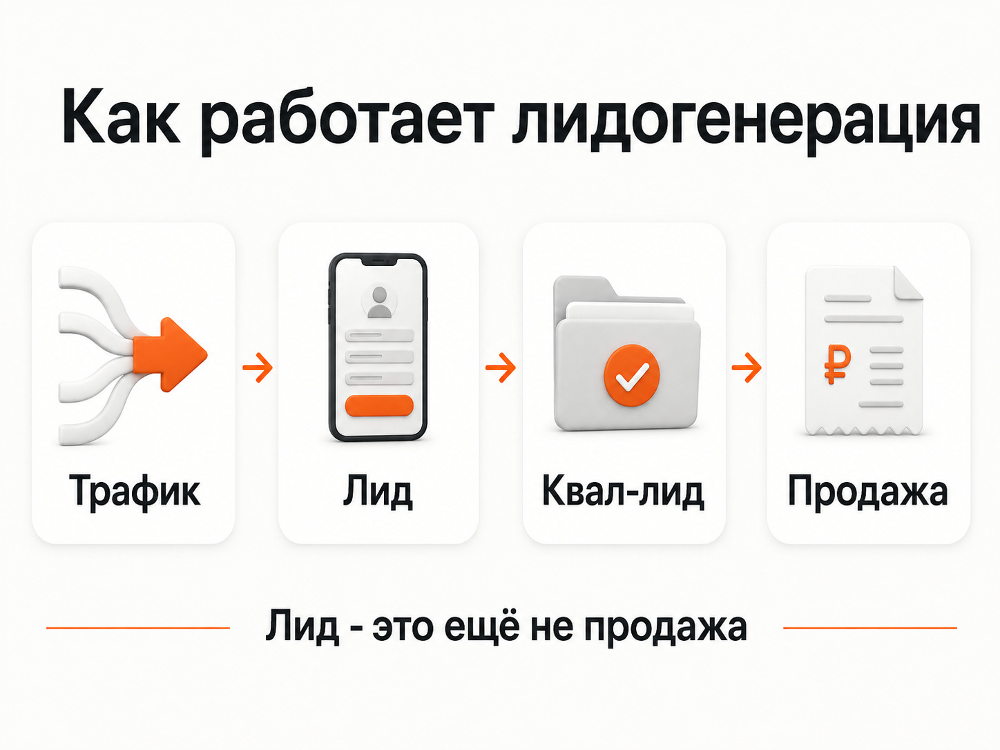
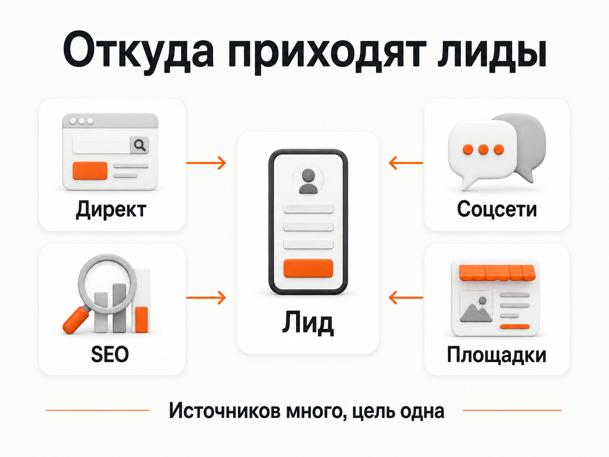
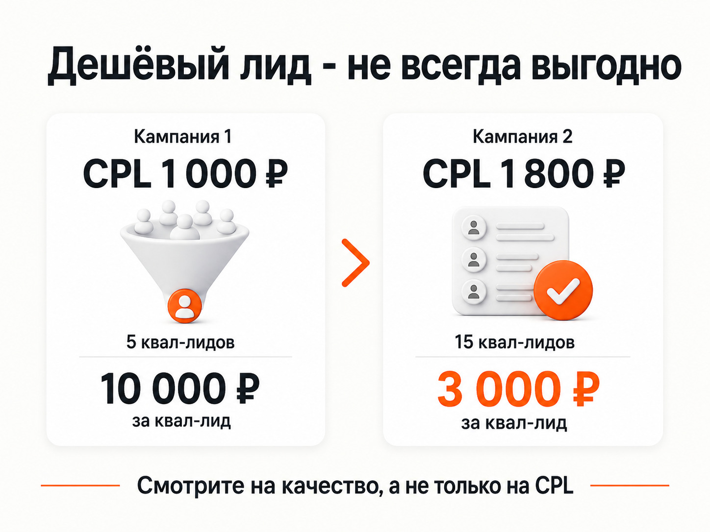

Блог о платном трафике
Лидогенерация: что это такое простыми словами и как работает
Лидогенерация - это процесс привлечения потенциальных клиентов, которые проявили интерес к товару или услуге и оставили возможность с ними связаться. Например, отправили заявку, позвонили, написали в мессенджер или запросили расчёт стоимости.
Лидогенерация - это процесс привлечения потенциальных клиентов, которые проявили интерес к товару или услуге и оставили возможность с ними связаться. Например, отправили заявку, позвонили, написали в мессенджер или запросили расчёт стоимости.
Если объяснять совсем просто, задача лидогенерации - превратить часть аудитории в обращения, с которыми бизнес уже может работать дальше.
Но лид ещё не означает продажу. Человек может оставить заявку и отказаться, не подойти по бюджету, ошибиться номером или вообще оказаться нецелевым. Поэтому нормальная оценка лидогенерации начинается не с вопроса «сколько получили заявок», а с трёх показателей: сколько они стоят, насколько они качественные и сколько из них становятся клиентами.
Что такое лидогенерация простыми словами
Представим компанию, которая устанавливает кондиционеры.
Рекламу увидели 10 000 человек. На сайт перешли 500. Из них 20 человек позвонили или оставили заявку.
Эти 20 обращений и будут лидами.
Сама цепочка выглядит примерно так:
Показ рекламы -> переход -> сайт -> заявка -> обработка -> продажа.
Лидогенерация отвечает прежде всего за появление обращений. Продажа происходит уже дальше, когда менеджер связывается с человеком, выясняет его задачу и доводит сделку до оплаты.
Поэтому трафик и лидогенерация - тоже разные вещи. Можно привести на сайт тысячи посетителей и практически не получить обращений. Для бизнеса такой трафик обычно имеет небольшую ценность.

Кто такой лид
В практическом смысле лид - это потенциальный клиент, который совершил достаточно конкретное действие, чтобы с ним можно было продолжить работу.
Лидом может быть:
- отправленная форма на сайте;
- телефонный звонок;
- сообщение в мессенджере;
- заявка через рекламную лид-форму;
- запрос стоимости;
- запись на консультацию;
- заказ обратного звонка.
Что именно считать лидом, зависит от бизнеса.
Например, для стоматологии лидом может быть запись на консультацию. Для производственной компании - запрос коммерческого предложения. Для интернет-магазина обычно логичнее считать заказ или покупку, а не обычную подписку на рассылку.
Я бы не называл лидом любое действие на сайте. Просмотр страницы, клик по кнопке или несколько минут на сайте могут быть полезными микроконверсиями, но отдел продаж работать с ними не сможет.
Как работает лидогенерация
В основе почти любой системы лидогенерации лежит одна логика.
1. Находится потенциальная аудитория
Сначала нужно получить внимание людей, которым потенциально нужен продукт.
Они могут искать услугу в Яндексе, читать статью в поисковой выдаче, увидеть рекламу, объявление на площадке или рекомендацию в другом источнике.
2. Человек знакомится с предложением
Пользователь попадает на сайт, лендинг, карточку товара, объявление, Telegram-канал, чат-бот или другую площадку.
На этом этапе он должен понять, что ему предлагают, подходит ли ему продукт и зачем вообще оставлять свои контакты.
3. Пользователь совершает целевое действие
Например:
- заполняет форму;
- звонит;
- пишет;
- запрашивает расчёт;
- оставляет контакты в лид-форме.
В этот момент потенциальный покупатель превращается в лид.
4. Обращение фиксируется
Для небольшого бизнеса это может быть обычное уведомление о новой заявке.
При большом количестве обращений лиды обычно передаются в CRM, где сохраняются источник, контакты, история коммуникации и текущий статус.
5. Лид квалифицируют и обрабатывают
Менеджер выясняет, действительно ли человеку подходит предложение.
После этого лид может:
- оказаться нецелевым;
- остаться потенциальным клиентом на будущее;
- перейти на следующий этап переговоров;
- превратиться в продажу.
Именно поэтому заканчивать анализ на количестве отправленных форм неправильно.
Чем лид отличается от клиента и продажи
Это разные этапы одной воронки.
| Этап | Что произошло |
|---|---|
| Посетитель | Человек увидел предложение или зашёл на сайт |
| Лид | Оставил обращение или контакт |
| Квалифицированный лид | Подходит бизнесу и действительно заинтересован |
| Клиент | Купил товар или услугу |
| Продажа | Бизнес получил заказ, договор или оплату |
Например, строительная компания получила 30 заявок.
После звонка выяснилось, что 10 человек хотели услуги, которыми компания не занимается. Ещё 8 пока только узнавали цены. 12 обращений подошли по задаче и бюджету.
Формально лидов было 30. Квалифицированных лидов - 12.
Считать эти показатели одним и тем же нельзя.
Откуда бизнес получает лиды
У лидогенерации нет одного специального канала. Обращения можно получать практически из любого источника, где есть целевая аудитория.
Контекстная реклама
Яндекс Директ позволяет привлекать людей из поиска и Рекламной сети Яндекса.
Особенно хорошо понятна механика на поиске: человек сам вводит запрос, видит объявление, переходит на сайт и оставляет заявку.
Поэтому Яндекс Директ часто используют в нишах, где уже существует сформированный спрос.
SEO
Статьи и коммерческие страницы могут получать посетителей из обычной поисковой выдачи Яндекса и Google.
Человек сначала приходит бесплатно из поиска, а затем звонит, пишет или отправляет форму.
Разница с платной рекламой заключается в способе получения трафика, но результат может быть тем же самым - новый лид.
Сайты объявлений и специализированные площадки
Для некоторых ниш источником обращений становятся Авито, каталоги, агрегаторы, маркетплейсы и отраслевые площадки.
Механика та же: пользователь видит предложение и связывается с продавцом.
Социальные сети и мессенджеры
Лиды могут появляться через рекламу, публикации, сообщества, Telegram-каналы, чат-ботов и прямые сообщения.
Человека можно вести как сразу на форму заявки, так и через несколько промежуточных касаний.
Контент и собственная аудитория
Блог, email-рассылка, видео, экспертные материалы и другие виды контента тоже способны приводить обращения.
Особенно это заметно в сложных продуктах, где человеку перед покупкой нужно разобраться в вопросе и убедиться в компетенции компании.
На практике бизнес часто использует сразу несколько источников. Поэтому задача аналитики - не просто подсчитать все обращения, а понять, какой канал привёл конкретного лида и чем закончилась эта заявка.

Как считать стоимость лида
Для оценки лидогенерации используют показатель CPL - Cost Per Lead, то есть стоимость одного лида.
Формула простая:
CPL = расходы на привлечение / количество лидов.
Например, рекламный бюджет составил 60 000 рублей, а реклама принесла 30 заявок.
60 000 / 30 = 2 000 рублей.
CPL равен 2 000 рублей.
Но сама цифра почти ничего не говорит без контекста.
Лид за 5 000 рублей может быть очень выгодным для бизнеса с крупным чеком. А заявки по 300 рублей могут оказаться бесполезными, если практически никто из этих людей не покупает.
Стоимость конкретного целевого действия также можно оценивать через CPA.
Почему дешёвые лиды не всегда хорошие
Одна из самых частых ошибок в рекламе - пытаться минимизировать стоимость заявки любой ценой.
Возьмём условный пример двух рекламных кампаний.
Первая кампания:
- 50 лидов;
- CPL - 1 000 рублей;
- квалифицированных обращений - 5.
На рекламу потрачено 50 000 рублей. Один квалифицированный лид фактически стоит 10 000 рублей.
Вторая кампания:
- 25 лидов;
- CPL - 1 800 рублей;
- квалифицированных обращений - 15.
Расход - 45 000 рублей. Стоимость квалифицированного лида - 3 000 рублей.
Если смотреть только на CPL, первая кампания кажется намного лучше.
Если посмотреть на реальные обращения, выигрывает вторая.
Поэтому количество лидов само по себе ничего не говорит об эффективности маркетинга.
Проблема особенно заметна в B2B, медицине, строительстве, недвижимости, производстве и других сферах, где между заявкой и сделкой есть дополнительная квалификация.
Отдельно я разбираю причины мусорных, нецелевых и слабых обращений в статье про качество лидов.
Некачественные лиды из Яндекс Директа: почему идут нецелевые заявки

Как оценивать качество лидогенерации
Я бы смотрел как минимум на несколько уровней.
Количество лидов
Показывает объём обращений.
Сам по себе показатель полезен, но делать по нему вывод об эффективности нельзя.
CPL
Показывает, сколько в среднем стоит одно обращение.
Он удобен для сравнения рекламных кампаний и каналов, если везде считается одинаковый тип лида.
Доля квалифицированных лидов
Показывает, какая часть полученных заявок действительно соответствует требованиям бизнеса.
Если реклама даёт 100 заявок, но отдел продаж принимает в работу только 10, это принципиально другая ситуация, чем 50 заявок, из которых подходят 40.
Стоимость квалифицированного лида
Для многих компаний эта метрика полезнее обычного CPL.
Она показывает, сколько рекламных денег фактически требуется для получения одного подходящего обращения.
Конверсия из лида в продажу
Показывает, какая часть обращений превращается в клиентов.
Здесь уже результат зависит не только от рекламы. На него влияют цена, продукт, скорость ответа, работа менеджеров, условия компании и множество других факторов.
Стоимость клиента и экономика продажи
В конечном итоге бизнесу нужно понимать не только цену заявки, но и сколько стоит реальный покупатель и сколько денег он приносит.
Именно на этом уровне можно нормально оценивать окупаемость маркетинга.
Как оценить эффективность Яндекс Директа: заявки, продажи и окупаемость
Где заканчивается лидогенерация и начинаются продажи
Провести точную границу не всегда просто.
Маркетинг приводит человека и получает обращение. После этого лид передаётся в продажи.
Если заявка качественная, но менеджер перезвонил через два дня или вообще её потерял, проблема уже не в источнике трафика.
Обратная ситуация тоже встречается постоянно. Отдел продаж говорит, что «не умеет закрывать лиды», хотя половина обращений изначально не соответствует продукту.
Поэтому при анализе нужно разделять две вещи:
- Насколько хорошо маркетинг привлекает потенциальных клиентов.
- Насколько хорошо бизнес превращает этих людей в покупателей.
Без CRM и понятных статусов заявок эти проблемы часто смешиваются.
Что нужно для нормальной лидогенерации
Сама реклама не создаёт рабочую систему автоматически.
Нужно, чтобы одновременно работало несколько элементов:
- выбран подходящий источник аудитории;
- предложение соответствует запросу человека;
- сайт или другая посадочная площадка нормально объясняет продукт;
- человеку удобно оставить обращение;
- заявки корректно фиксируются;
- известно, откуда пришёл каждый лид;
- отдел продаж отмечает качество и результат обработки;
- маркетинг получает эти данные и использует их для оптимизации.
Если последний пункт отсутствует, реклама часто начинает оптимизироваться только на количество отправленных форм.
Для бизнеса намного полезнее понимать, какие кампании приводят квалифицированные обращения и реальные продажи.
Что в итоге такое лидогенерация
Лидогенерация - это системное получение потенциальных клиентов из рекламы, поиска, площадок, контента и других источников.
Её задача - привести человека к конкретному обращению: звонку, заявке, сообщению или другому действию, после которого бизнес может продолжить с ним работу.
Но лид - это ещё не клиент.
Поэтому хорошую лидогенерацию я бы оценивал не по максимально большому количеству заявок и не по минимальному CPL. Нужна вся цепочка:
трафик -> лид -> квалифицированный лид -> продажа -> деньги.
Чем лучше бизнес видит эту цепочку, тем проще понять, какие источники действительно работают, а какие просто создают красивые цифры в рекламном отчёте.